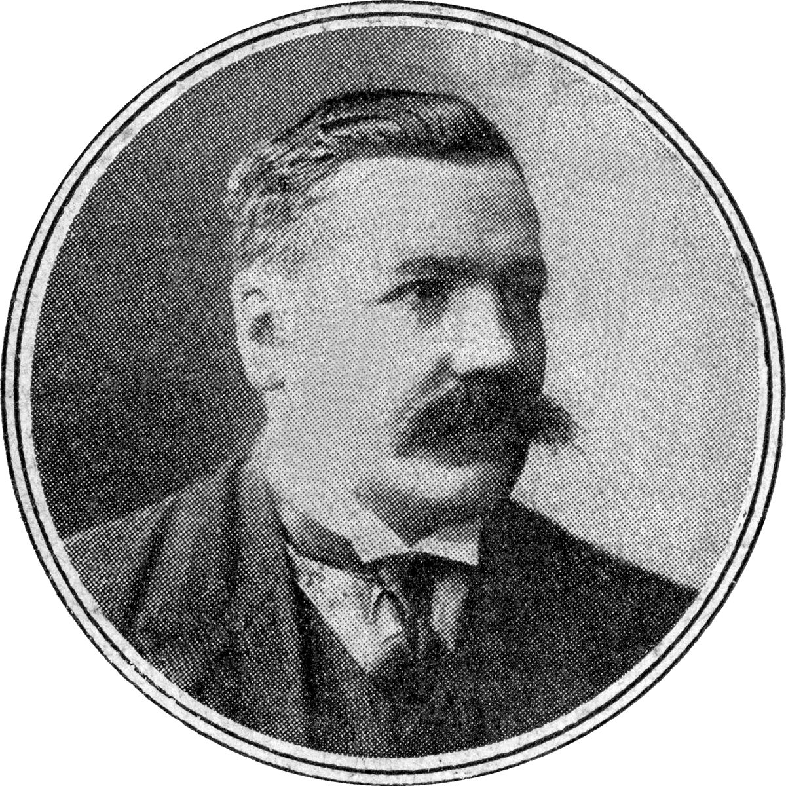

Contexte
Le livre paraît en 1909. La CGT, alors syndicaliste révolutionnaire, est au sommet de son influence : elle a adopté en 1906 la Charte d'Amiens, qui fait du syndicat à la fois l'outil des luttes d'aujourd'hui et la base de la société de demain. Les grèves sont nombreuses et durement réprimées (Draveil-Villeneuve-Saint-Georges, 1908 : des ouvriers tués par la troupe), et le parlementarisme est discrédité.

Les auteurs sont deux militants de la CGT. Émile Pataud, électricien, a plongé Paris dans le noir en 1907 en organisant la grève des centrales électriques : la presse le surnomme « le roi de la lumière ». Émile Pouget, ancien anarchiste devenu numéro deux de la CGT, est le journaliste du mouvement, fondateur du Père Peinard.
La forme
Une chronique d'anticipation : le livre fait comme si la révolution était déjà accomplie et raconte, au passé, comment elle s'est passée. C'est un mélange de reportage, de fresque et de leçon politique, où les auteurs répondent aux questions pratiques : qui fait marcher les trains, comment on mange, que deviennent l'armée et les banques.
Le déroulé imaginé
- L'étincelle : une grève du bâtiment à Paris, une manifestation, des ouvriers tués par la police et l'armée.
- La grève de solidarité s'étend à toutes les professions.
- L'immobilisation : usines électriques et gazières, chemins de fer, postes s'arrêtent. Paris est plongé dans le noir.
- L'État réplique avec des soldats, trop peu nombreux et de moins en moins motivés. La rafle contre les militantes et militants échoue.
- Les funérailles des victimes rassemblent des foules immenses ; la grève devient offensive.
- Puis : prise des banques, grève en province, terre rendue aux paysans, fin du commerce, transports et services gérés par les syndicats, armement du peuple, éducation, abondance, art, émancipation des femmes.
Les idées
- La grève générale est l'arme décisive : toute la société repose sur le travail ouvrier.
- Le syndicat et la Bourse du travail deviennent la structure de la société nouvelle : chaque métier gère sa branche, les bourses coordonnent localement.
- Les partis, même socialistes, défendent l'ordre une fois au pouvoir.
- L'armée peut refuser d'obéir, si l'on a fait de la propagande parmi les soldats.
- Une révolution naît de façon désordonnée ; les militantes et militants doivent l'accompagner, pas la devancer.
Débats et limites
- Tout va trop bien. La contre-révolution est vite vaincue, l'étranger n'intervient guère. L'Espagne de 1936 montrera combien la réalité est plus dure.
- Le syndicat partout : Malatesta reprochait à cette vision d'oublier que les syndicats peuvent devenir conservateurs, et que tout le monde n'est pas salarié.
- La guerre de 1914 balaiera la CGT révolutionnaire : la grève générale contre la guerre n'aura pas lieu, et la direction se ralliera à l'Union sacrée.
Et aujourd'hui ?
L'idée de la grève générale revient à chaque grand mouvement social, de Mai 68 aux mobilisations contre les réformes des retraites. Le livre reste une formidable boîte à idées pour imaginer concrètement le lendemain : qui fait quoi, comment, avec quelles assemblées. On peut le lire comme un roman.
À retenir
- Le grand récit utopique du syndicalisme révolutionnaire français.
- La société nouvelle s'organise à partir des métiers et des bourses du travail.
- À lire avec L'Action directe de Pouget.
Le texte complet est sur Mamie Commune. Lire en ligne ou ouvrir le PDF.
Sources et pour aller plus loin
Le texte original
- Le texte complet sur Mamie Commune, à lire en ligne ou en PDF.
- « Comment nous ferons la Révolution » sur la Bibliothèque anarchiste : le texte intégral, aussi en PDF et en livre numérique (EPUB).
Lire
- Déposséder les possédants. La grève générale aux « temps héroïques » du syndicalisme révolutionnaire, textes réunis par Miguel Chueca, Agone, 2008.Les textes du débat sur la grève générale, présentés et expliqués.
- L'Action directe et autres écrits syndicalistes, Émile Pouget, Agone.Les principaux textes de Pouget.
Sur le web
- La Charte d'AmiensLe texte fondateur du syndicalisme révolutionnaire, 1906.
- Émile Pataud et Émile Pouget sur WikipédiaLes deux auteurs.
- CNTUne confédération syndicale qui se réclame aujourd'hui de cette tradition.
Fiche de lecture rédigée par la bande à Mamie d'après les textes de la Bibliothèque anarchiste francophone. Cette fiche est libre de reproduction.
À lire aussi · Révolution & stratégie
- TAZ, Zone autonome temporairePlutôt qu'attendre une révolution qui recrée un pouvoir, ouvrir des espaces de liberté qui surgissent, vivent intensément et se dissolvent avant d'être écrasés.
- L'Action anarchiste dans la révolutionUne révolution doit créer en même temps qu'elle détruit, sinon de nouveaux chefs reprendront les rênes.
- Évolution et révolutionLa première version du texte qui deviendra « L'Évolution, la révolution et l'idéal anarchique ».